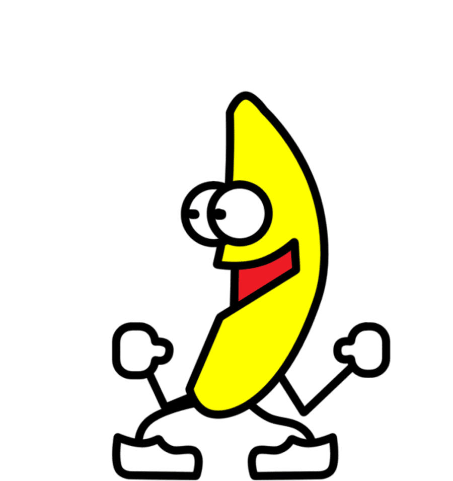
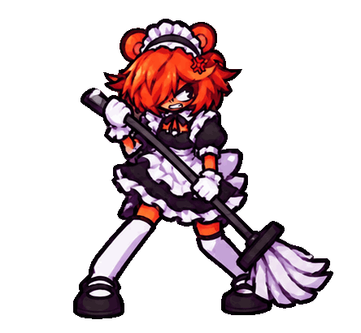
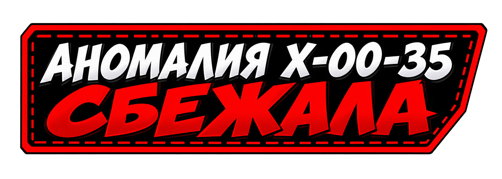
ИССЛЕДОВАНИЯ 4
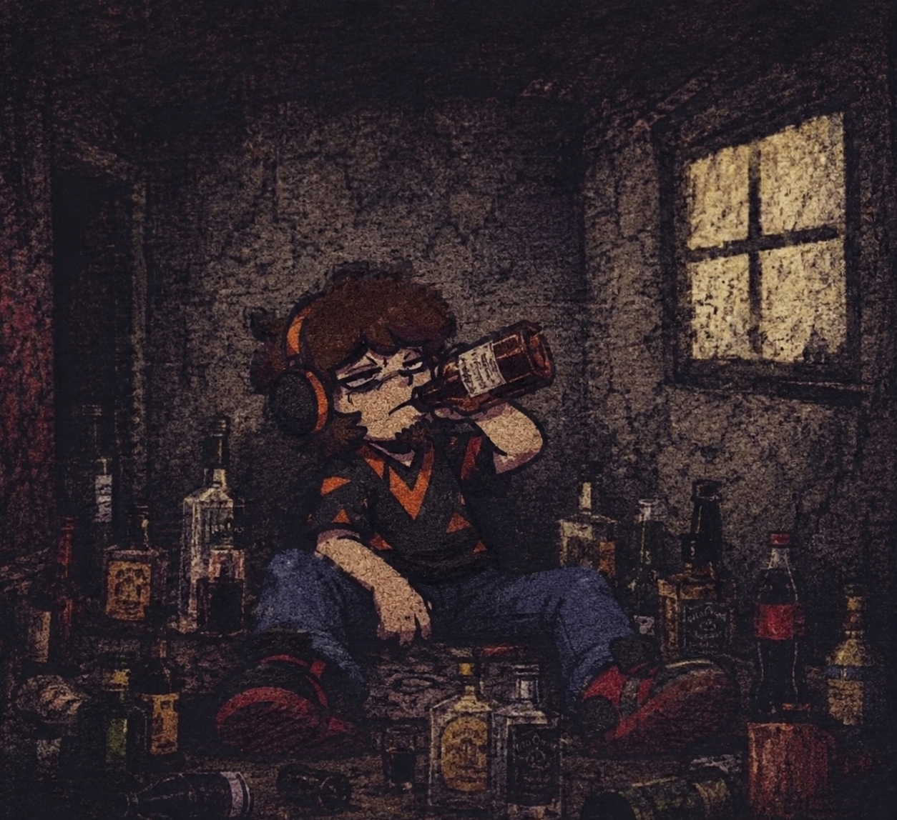
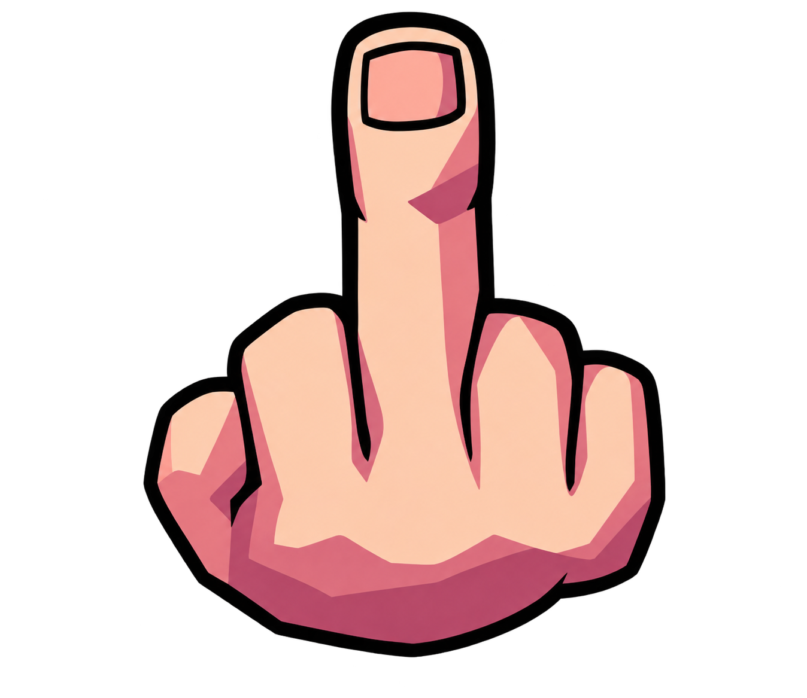
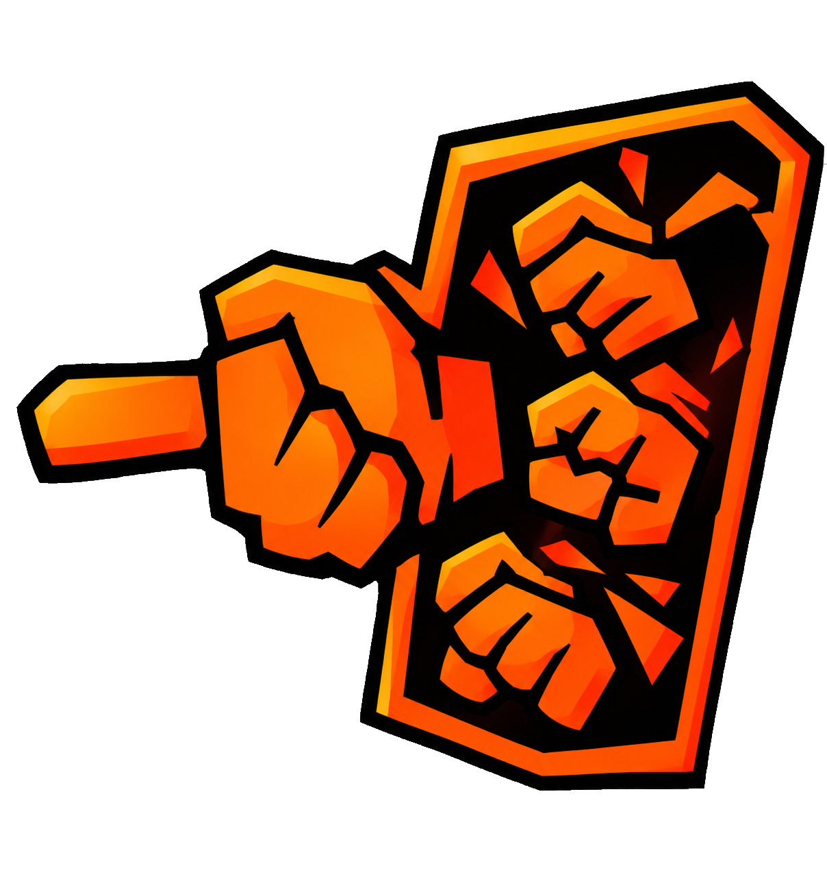
I — Низкий
II — Низкий
III — Обычный
IV — Высокий
V — Высокий
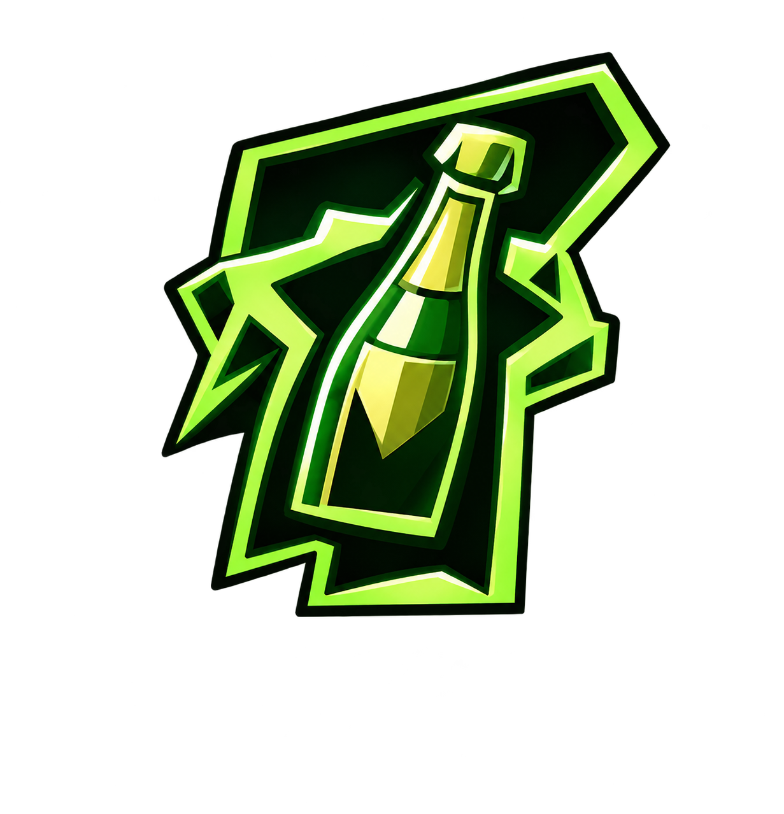
I — Высокий
II — Высокий
III — Высокий
IV — Высокий
V — Высокий
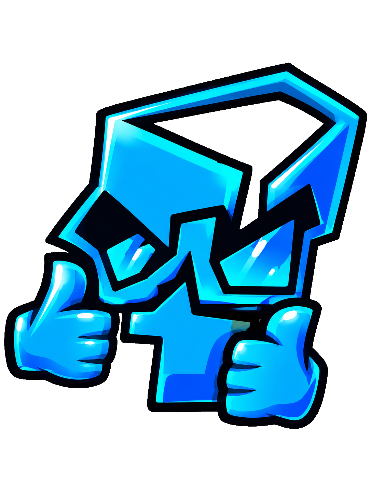
I — Высокий
II — Высокий
III — Высокий
IV — Высокий
V — Высокий
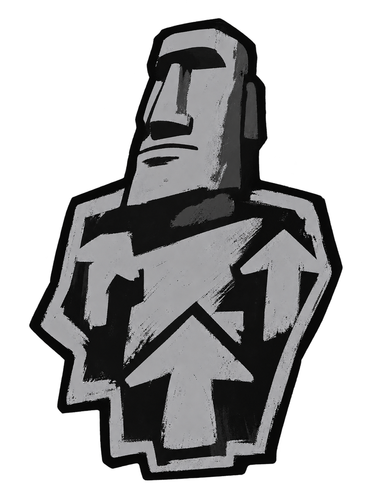
I — Низкий
II — Низкий
III — Низкий
IV — Низкий
V — Низкий
Счётчик Клипо́та
АНОМАЛИЯ ИНФОРМАЦИЯ О ПОБЕГЕ
СБЕГАЕТ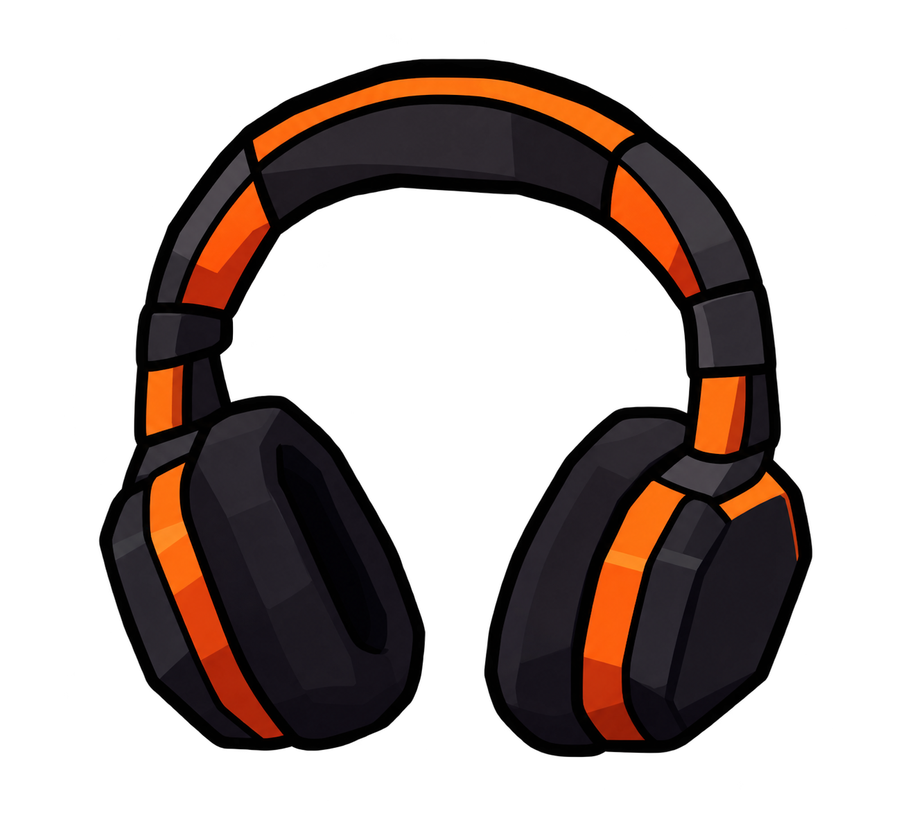
Э.П.О.С. ДАР (ШАНС ПОЛУЧЕНИЯ: 0%)
Пробуханные наушники. Необычный артефакт, позволяющий услышать даже самые тихие звуки. При использовании владелец получает +6 к концентрации и +6 к сопротивлению внешним раздражителям. Иногда вместо полезных звуков слышится звон бутылок.
Э.П.О.С. ОРУЖИЕ
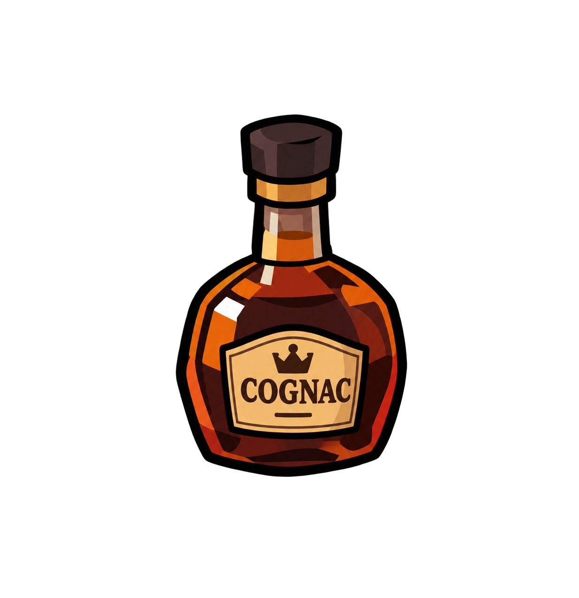
Бутылка КоньякаУрон: 0.1–1.Может нанести дополнительный психологический ущерб противнику.
Э.П.О.С. БРОНЯ
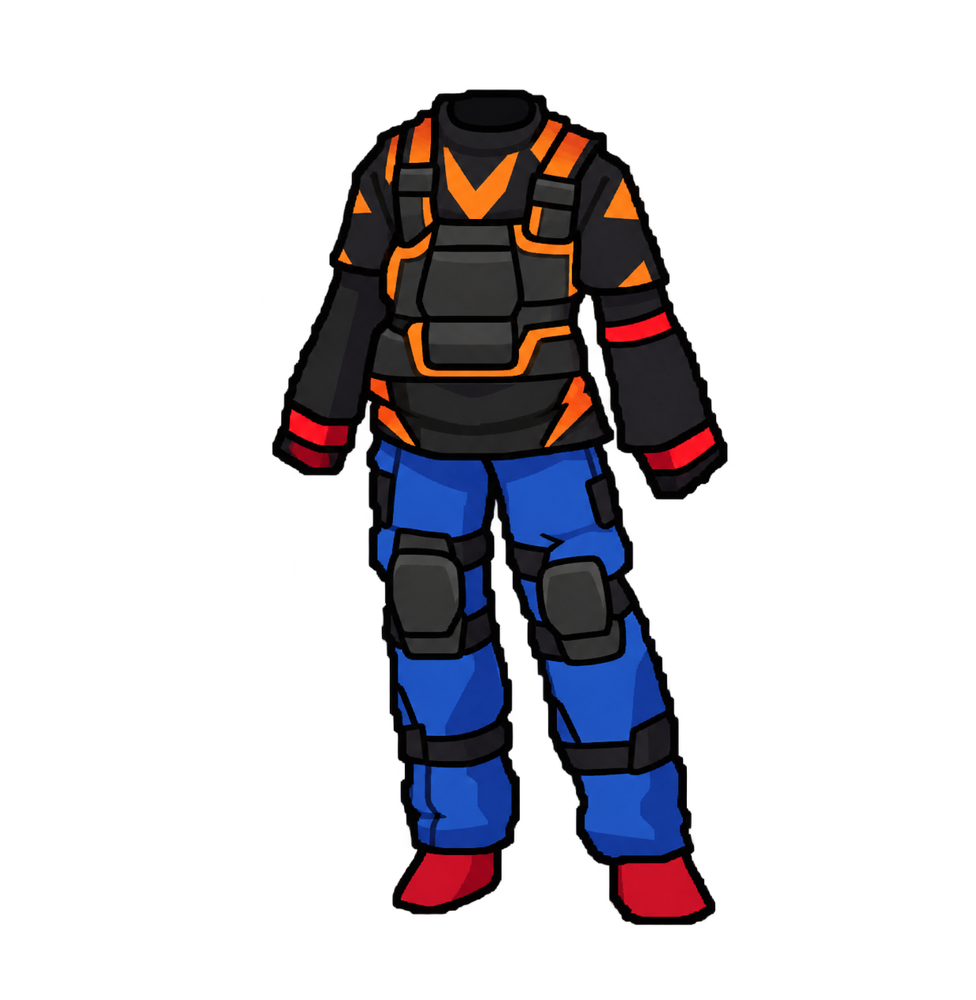
Амуниция АлкашаПовышает стойкость владельца к внешним воздействиям. Дополнительная защита от последствий собственных решений.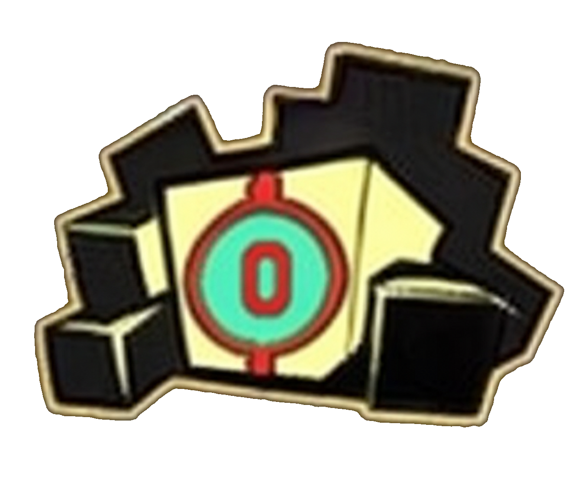
СОБРАНОPE-ЯЧЕЕК
01. ПРОИСХОЖДЕНИЕ ОБЪЕКТА
До появления объекта X-00-35 в архивах исследовательского комплекса существовали записи о людях, которые демонстрировали необычайную устойчивость к аномальным воздействиям. Однако ни один из них не проявлял себя так, как альтернативная версия Хантера.
В отличие от оригинального Хантера, эта версия однажды приняла решение отказаться от привычки использовать алкоголь как способ ухода от проблем. Это не превратило его в совершенно другого человека: он сохранил упрямство, резкость, чувство юмора и склонность спорить. Изменился прежде всего способ, которым он справлялся с последствиями собственных решений.
Согласно восстановленной предыстории, переломный момент наступил после череды неудач, в которых он увидел повторяющийся сценарий. Вместо очередной попытки забыть произошедшее он решил разобраться с причинами. Решение далось ему нелегко, но именно оно стало отправной точкой альтернативной ветви.
02. ОБНАРУЖЕНИЕ И ИЗОЛЯЦИЯ
Первые сообщения об объекте поступили от наблюдателей, заметивших человека, чьи поведенческие реакции почти полностью совпадали с известным профилем Хантера, но при этом отсутствовала одна из наиболее устойчивых привычек оригинала. Первоначально сотрудники предположили, что имеют дело с обычным изменением поведения.
Повторные наблюдения показали, что различие глубже. Объект сохранял узнаваемые черты характера, однако демонстрировал необычно последовательную способность отказываться от старых моделей поведения. После серии проверок ему присвоили временный номер X-00-35 и перевели в отдельный сектор наблюдения.
Изоляция была организована не как наказание, а как мера предосторожности: исследователи хотели исключить влияние внешних факторов и понять, является ли альтернативная личность самостоятельной аномалией.
03. ПЕРВЫЕ ЭКСПЕРИМЕНТЫ
На первом этапе специалисты проверяли реакцию объекта на психологическое давление, угрозы, игнорирование и попытки манипуляции. Результаты оказались неоднородными: объект мог раздражаться, спорить и отказываться выполнять требования, но редко менял принятое решение только ради прекращения неприятного разговора.
Особенно интересной оказалась реакция на поддержку. При доброжелательном отношении объект чаще соглашался сотрудничать, задавал встречные вопросы и добровольно участвовал в тестах. Исследователи отметили, что доверие формировалось медленно, но после формирования сохранялось заметно дольше, чем ожидалось.
В одном из отчётов было указано: «Объект не демонстрирует покорность. Он демонстрирует осознанное согласие — и это принципиально разные вещи».
04. СРАВНЕНИЕ С ОРИГИНАЛОМ
Сравнительный анализ подтвердил совпадение ряда базовых особенностей: обе версии способны проявлять упрямство, эмоциональную резкость и склонность скрывать неловкость за шутками. Однако их способы преодоления трудностей различаются.
Оригинальная версия чаще стремится отстраниться от проблемы и заглушить неприятные переживания. Альтернативная версия предпочитает столкнуться с ними напрямую, хотя это не делает её безошибочной или постоянно дисциплинированной.
Исследователи отдельно предупреждают: X-00-35 нельзя считать «улучшенной копией». Это самостоятельная версия личности, сформированная другим выбором и другим опытом. Попытки противопоставлять две версии друг другу могут вызвать конфликт.
05. ПЕРИОД НАБЛЮДЕНИЯ
После завершения основных экспериментов объект оставили под наблюдением. Он не проявлял постоянной агрессии к персоналу, соблюдал большую часть установленных правил и регулярно интересовался результатами исследований. Со временем сотрудники стали обращаться к нему не только как к объекту изучения, но и как к участнику бесед о природе привычек и личного выбора.
Вместе с тем X-00-35 не утратил способности к неожиданным поступкам. В нескольких случаях он покидал назначенное помещение без разрешения, объясняя это тем, что «ему нужно было проветрить голову». Именно после этих эпизодов в карточке появилась отметка о риске побега.
Счётчик Клипо́та был установлен на уровне 2. Уровень исследования оставили прежним до завершения дополнительной серии тестов.
06. ЗАКЛЮЧЕНИЕ ИССЛЕДОВАТЕЛЕЙ
Альтернативный Хантер является редким примером того, как значительное изменение поведения может произойти без полного изменения личности. Его история не доказывает, что одна версия лучше другой. Она показывает, что даже при сходных исходных чертах разные решения способны привести к разным жизненным траекториям.
Последняя запись в архиве содержит заметку старшего исследователя:
«Мы ожидали увидеть ещё одну версию привычной аномалии. Вместо этого мы обнаружили человека, который однажды решил больше не повторять собственные ошибки. Он всё ещё спорит, всё ещё упрямится и всё ещё умудряется нарушать расписание. Но теперь хотя бы помнит, зачем вообще решил измениться».
Статус объекта: НАБЛЮДЕНИЕ ПРОДОЛЖАЕТСЯ.
Класс доступа: ALEPH.
Код объекта: X-00-35.
Угроза побега: ПРИСУТСТВУЕТ.